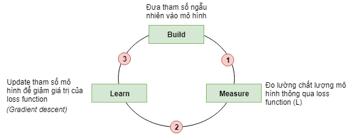
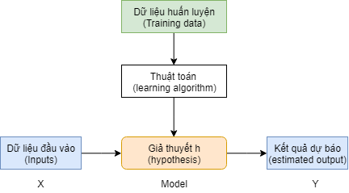
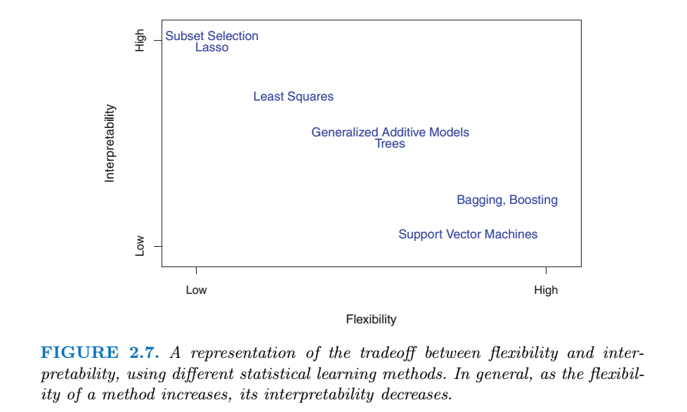
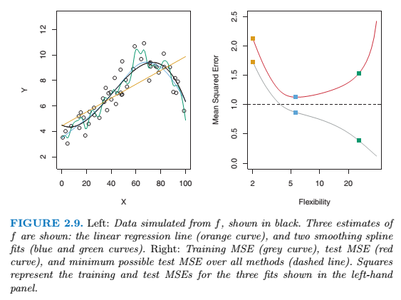
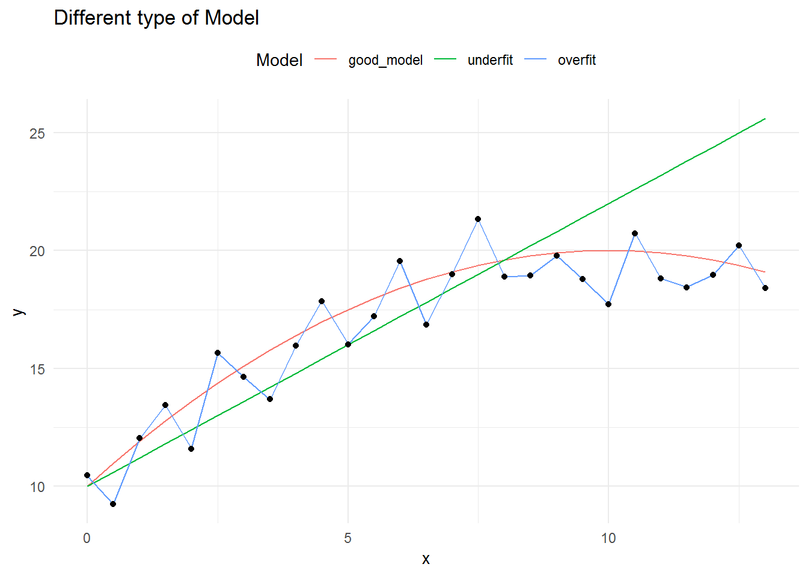
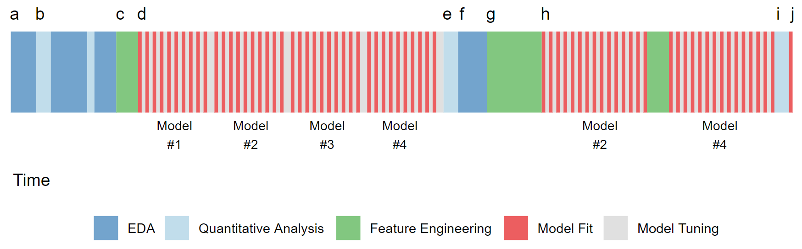

1. Các nguyên lý dự báo¶
Trong chương này, chúng ta sẽ tìm hiểu những khái niệm và nguyên lý cơ
bản nhất của học máy (machine learning hay statistical learning).
Các nguyên lý này sẽ giúp ta nắm vững để có thể phát triển nhanh chóng
trong lĩnh vực dự báo. Khi đã nắm vững các nguyên lý này, việc xây dựng
mô hình với các thuật toán khác nhau sẽ không còn quan trọng nữa bởi tất
cả sẽ đều phải đi qua các nguyên lý giống nhau.
1.1. Giới thiệu¶
1.1.1. Các nhánh trong học máy (machine learning)¶
Statistical Learning (SL) hay Machine Learning là nghành học sử dụng nhiều phương pháp và công cụ toán học khác nhau để tìm hiểu về cấu trúc của dữ liệu. ML có thể được chia thành 2 dạng: Định hướng & không định hướng:
- Phân tích có định hướng trước (Supervised learning): Xây dựng các
mô hình giữa biến phụ thuộc với một hoặc nhiều biến độc lập. Trong
đó, kết quả đầu ra y đã được xác định trước. Ví dụ: Dự báo khách hàng
vỡ nợ dựa vào các đặc trưng về nhân khẩu học và hành vi giao dịch của
khách hàng. Các thuật toán như cây quyết định, logistics, mô hình hồi
quy tuyến tính đều thuộc loại này. Tuy nhiên, tùy thuộc vào biến cần
dự báo, ta lại có hai nhóm nhỏ sau:
- Bài toán phân loại (classification): Khi biến phụ thuộc là các biến định dạng nhóm (category). Ví dụ, khách hàng tốt hay xấu, khách hàng mua hay không mua sản phẩm,…
- Bài toán dự báo (regression): Khi biến phụ thuộc là biến số cần dự báo giá trị. Ví dụ, giá trị của tổng các giao dịch một khách hàng có trong 1 tháng…
- Phân tích không định hướng trước(Unsupervised learning): Biến
phụ thuộc chưa biết trước và mục tiêu của mô hình là tìm ra các mối
qua hệ ẩn giữa các nhóm. . Ví dụ, phân nhóm khách hàng thành 5 nhóm
các hành vi tương tự nhau. Các thuật toán như apriori, k-means, PCA,
FA thuộc nhóm này. Các bài toán loại này có thể chia làm 2 nhóm lớn
như sau:
- Bài toán phân nhóm (clustering): Bài toán loại này giúp ta chia tập dữ liệu sẵn có thành nhiều nhóm khác nhau để sao cho đặc trưng của mỗi nhóm là gần nhau nhất
- Bài toán tìm thành phần chính (PCA): Bài toán này giúp ta giảm số lượng các biến có sẵn trong dữ liệu gốc nhưng vẫn đảm bảo thể hiện được cấu trúc của toàn bộ dữ liệu
1.1.2. Cách xây dựng mô hình¶
Khi bắt đầu tìm hiểu về học máy hoặc kinh tế lượng, ta sẽ thường xuyên gặp khái niệm mô hình. Mô hình là cách thức thể hiện mối quan hệ giữa các biến thông quan các công cụ toán học. Do mô hình là cách thức đơn giản hóa mối quan hệ giữa các biến trên thực tế, do đó, mô hình còn được nhiều nhà phân tích gọi là giả thuyết. Khi xây dựng một mô hình dự báo, bản chất là ta dựa vào tập dữ liệu cho trước, áp dụng một thuật toán để đưa ra một mô hình (giả thuyết) về mối quan hệ giữa biến đầu vào và đầu ra.
Khi xây dựng mô hình, ta thường có ba tập dữ liệu
- Train: Tập dữ liệu được sử dụng khi xây dựng mô hình
- Validation: tập dữ liệu dùng để đánh giá chất lượng mô hình được xây trên tập train, cập nhật lại các hyper-parameters mô hình để đưa ra mô hình cuối cùng.
- Test: Tập dữ liệu độc lập dùng để đánh giá chất lượng mô hình cuối cùng
Mô hình (hay giả thuyết h) giữa biến đầu vào và đầu ra được thể hiện như sau.
- \(h_{\theta}\) được gọi là giả thuyết hay mô hình.
- \(\theta\) là tham số của mô hình.
Với các bài toán (supervised vs. nonsupervised) khác nhau, phương trình trên sẽ được thay đổi để phù hợp với bài toán thực tế.
Khi xây dựng mô hình, tất cả các thuật toán của ML đều trải qua ba bước cơ bản theo sơ đồ sau.

- Bước 1: Xây dựng mô hình với tham số bất kỳ. Với mỗi mô hình, sẽ có các tham số khác nhau. Ví dụ, mô hình OLS, tham số là hệ số \(\beta\) trong mô hình \(y = \beta*X\).
- Bước 2: Đo lường sai số mô hình so với thực tế.
- Bước 3: Update lại tham số của mô hình để giảm thiểu sai số giữa mô hình và thực tế.
Thuật toán sẽ tiếp tục diễn ra cho đến khi sai số của mô hình nhỏ hơn 1 mức sai số định trước.
Với mô hình phân tích có định hướng (tồn tại biến Y cần dự báo), phương trình của mô hình dự báo có thể biểu diễn dưới dạng.
Trong đó:
- Y được gọi là biến phụ thuộc (dependent variables)
- X được gọi là biến độc lập (independent variables) hay biến dự báo (predictors)
1.1.3. Sử dụng mô hình¶
Sau khi xây dựng, bước tiếp theo là sử dụng mô hình trong việc dự báo thực tế.
Quy trình xây dựng phân tích dữ liệu thực tế

1.2. Các nguyên lý trong dự báo¶
1.2.1. Reducible vs. irreducible error¶
Trong thực tế, mối quan hệ giữa X & Y được biểu diễn qua hàm sau:
Khi phân tích dữ liệu, ta tìm hàm \(\hat(Y)=\hat{f}(X)\) gần nhất với \(f(X)\). Sai số giữa thực tế và mô hình sẽ là:
Lưu ý: \(Var(\epsilon) = E(\epsilon^2) - E(\epsilon)^2\)
Khi xây dựng mô hình, ta chỉ có thể giảm bớt phần reducible error mà không thể giảm được phần variance của sai số. Do đó, mô hình sẽ không thể đạt được độ chính xác 100% mà luôn tồn tại một mức sai số nhất định.
1.2.2. Khả năng giải thích và khả năng dự báo¶
Khi xây dựng mô hình, có hai khía cạnh cần phải xử lý:
- Khả năng giải thích hay khả năng rút ra kết luận từ mô hình
(inference): Nhấn mạnh đến khả năng diễn đạt ý nghĩa các biến trong
mô hình. Các câu hỏi thường dùng là:
- Biến độc lập (predictors) nào có quan hệ chặt chẽ với biến cần dự báo (dependent variables)?
- Mối quan hệ giữa biến độc lập và biến dự báo là gì?
- Mối quan hệ này có thể biểu diễn một cách đơn giản dạng mô hình tuyến tính hay phải mô tả dưới dạng phức tạp hơn?
Ví dụ về khả năng giải thích của mô hình:
- Khách hàng trả nợ trễ hạn 3 lần sẽ làm tăng khả năng trốn nợ lên 20%
- Giá giảm 10% sẽ khiên doanh thu tăng thêm khoảng 6%.
Các thuật toán như OLS, apriori, Logistics thuộc nhóm này.
- Khả năng dự báo của mô hình (Predictor): Ưu tiên hơn đến tính chính xác của mô hình dự báo, không quan tâm đến việc mô tả quan hệ giữa các biến. Ví dụ: Random Forest, Neuron Network, KNN
Nguyên lý: Khi xây dựng mô hình, ta buộc phải dánh đổi giữa độ chính xác của mô hình vs. khả năng diễn giải mô hình và không tồn tại một mô hình tốt nhất cho mọi trường hợp. Do đó, ta cần phải lựa chọn mô hình theo từng đối tượng. Mô hình có độ chính xác cao thường khó mô tả mối quan hệ giữa các biến (VD: decision tree) và ngược lại (VD: OLS)

1.2.3. Mô hình có tham số cho trước hoặc không có tham số cho trước (Parametric vs. Nonparametric)¶
Đây là hai loại hai trường phái được sử dụng khi xây dựng các mô hình thống kê.
- Parametric: Đưa ra mô hình biểu diễn mối quan hệ trước rồi sau đó ước lượng mô hình đưa ra. VD: OLS, Logistic Regression
- Nonparametric: Không đưa ra mô hình, chỉ đưa ra phương pháp và để thuật toán tự động tìm kết quả. VD: Association rule, decision tree…
1.2.4. Nguyên lý chữ U¶
Khi xây dựng mô hình, để đánh giá chất lượng, ta sẽ đo lường sai số trên tập train và tập test. Sai số của mô hình được tính như sau (với trường hợp regression)
Khi đánh giá chất lượng mô hình, ta cần đánh giá trên cả tập train và tập test. Thông thường, mô hình sẽ được xây trên tập train và được đánh giá trên tập test. Các tham số trên tập train sẽ được thay đổi để sai số mô hình được tối ưu. Số lượng tham số cần tối ưu càng nhiều, mô hình càng phức tạp.
Ví dụ: Ta cần dự báo \(income\), ta có hai mô hình sau.
| STT | Phương trình |
|---|---|
| 1 | \(income = \beta_0 + \beta_1*age\) |
| 2 | \(income = \beta_0 + \beta_1*age + \beta_2*exper ience\) |
Trong hai mô hình trên, mô hình 2 được gọi là phức tạp hơn mô hình 1 (compexity level).
Khi xây dựng mô hình, nguyên lý chữ U cho ta biết về sự thay đổi sai số trên hai tập train và test theo độ phức tạp của mô hình như sau.
Khi mô hình có độ phức tạp càng cao thì sai số của tập train sẽ ngày càng giảm trong khi sai số của tập test sẽ có dạng chữ U

Lưu ý:
- Nguyên lý chữ U cho ta thấy, việc tăng thêm biến vào mô hình (# variables) không phải lúc nào cũng làm tăng chất lượng mô hình
- Khi xây dựng mô hình, cần phải tìm được điểm cân bằng giữa độ phức tạp mô hình và độ chính xác. Điểm này chính là điểm thấp nhất trên đường chữ U của sai số trên tập test
1.2.5. Bias Variance Trade-Off¶
Người ta chứng minh được rằng:
Trong đó:
- \(E(y_0 - \hat{f}(x_0))^2\): Kỳ vọng của MSE
- \(Var(\hat{f}(x_0))\): Phương sai của MSE trong tập test khi ta thay đổi tập training
- \([Bias(\hat{f}(x_0))]^2\): Sai số của mô hình ước lượng \(\hat{f}(x)\) so với mô hình thực tế \(f(x)\). VD: Mô hình thực tế là \(y=x^2\), mô hình ước lượng là \(y=0.9*x^2\)
- \(Var(\epsilon)\): Phương sai của nhiễu
Nguyên lý:
- Variance của mô hình tăng thì Bias sẽ giảm và ngược lại.
- Độ biến động (variance) vs. độ chuẩn xác (bias):
variancelà độ biến động của mô hình so với dữ liệu, đo độ nhạy cảm của các tham số trong mô hình khi thay đổi dữ liệu. Nói cách khác, một mô hình được gọi là biến động lớn khi dữ liệu mô hình thay đổi sẽ dẫn đến một sự thay đổi lớn trong mô hình. Ví dụ, mô hình sử dụng trung vị làm biến dự báo sẽ ít biến động hơn khi sử dụng giá trị trung bình.biasđo độchuẩn xáccủa mô hình. Một mô hình được gọi làbiasthấp khi kết quả dự báo gần với kết quả thực tế và ngược lại. Các mô hình cóbiasthấp có khả năng thích ứng với dữ liệu tốt, các mô hình như cây quyết đinh, neural network thuộc dạng này.
Phương pháp tính toán phân loại - The Classification Setting
Trong đó \(I(y_i \neq \hat{y_i}\) là “indicator variable”, có giá trị bằng 1 nếu \(y_i \neq \hat{y_i}\), có giá trị bằng 0 nếu \(y_i= \hat{y_i}\)
1.2.6. Overfitting & regularization¶
Khi xây dựng mô hình dự báo, có thể xảy ra 3 trường hợp:
- Underfiting: Hiện tượng mô hình quá đơn giản, tính khái quát hóa cao nhưng dự báo không tốt, dẫn đến sai số cả ở tập train & test đều cao. Mô hình underfitting thường đi kèm với bias cao
- Overfitting là hiện tượng xảy ra khi mô hình hoạt động tốt trên tập
train nhưng dự báo rất kém trên tập test. Mô hình loại này sẽ khiến
sai số trên các tập dữ liệu khác nhau thường rất khác nhau. Do đó,
overfitting còn đi kèm với
variancelớn - Mô hình được xây dựng tốt: Là loại mô hình hoạt động tốt trên cả tập train & test.
3 trường hợp xây dựng mô hình được thể hiện ở hình dưới đây.
library(tidyverse)
df <- data.frame(
x = seq(0, 13, by = 0.5)
) %>%
mutate(good_model = 10 + 2*x - 1/10*x^2) %>%
mutate(y = good_model + rnorm(nrow(.), 0, 1)) %>%
mutate(underfit = 10 + 1.2*x) %>%
mutate(overfit = y + rnorm(nrow(.), 0, 0.01))
library(reshape2)
df2 <- df %>%
melt(id.vars = c("x", "y"))
df2 %>% ggplot() +
geom_line(aes(x, value, col = variable)) +
geom_point(aes(x, y), col = "black", alpha = 0.8) +
theme_minimal() +
theme(legend.position = "top") +
scale_color_discrete(name = "Model") +
labs(title = "Different type of Model",
y = "y")

Để giải quyết vấn đề overfiting, ta có thể làm như sau:
- Giảm biến bằng cách chọn biến thủ công hoặc áp dụng các kỹ thuật lựa chọn mô hình
- Regularization: Kỹ thuật cho phép giữ nguyên số lượng biến đầu vào nhưng giảm giá trị của các tham số \(\theta\) trong mô hình
Regularization: Regularization cho phép tính toán giá trị của các tham số \(\theta\) trong mô hình, sao cho các giá trị của \(\theta\) càng nhỏ càng tốt. Hàm tối ưu hóa được thay đổi lại như sau.
Trong đó, \(\lambda\sum_{i=1}^n\theta_j^2\) được gọi là tham số
regularization. Hệ số, \(\lambda\) sẽ quyết định vị độ mạnh của
regularization. Nếu \(\lambda\) càng lớn, yếu tố làm giảm thiểu
overfitting càng mạnh. Tuy nhiên, nếu \(\lambda\) quá lớn (ví dụ,
\(10^{10}\)) sẽ khiến cho toàn bộ các tham số \(\theta\) trở về
0, và mô hình sẽ thay đổi từ overfitting sang underfitting.
1.3. Quy trình xây dựng mô hình dự báo¶
Quá trình dự báo: Trong thực tế, quá trình dự báo diễn ra như sau

1.4. Ensemble methods¶
Ensemble methods (tạm dịch: phương pháp kết hợp) là phương pháp tổng hợp nhiều kết quả khác nhau từ những mô hình riêng biệt để có thể xây dựng một mô hình có độ chính xác cao hơn.
Có 3 loại như sau:
- Bagging: Xây dựng cùng lúc nhiều mô hình cùng loại trên nhiều tập con của train, mô hình cuối là tổng của các mô hình con (VD: Random Forest)
- Boosting: Nhiều mô hình cùng loại trên nhiều tập con, mô hình sau học và đánh trọng số trên những trường hợp phân loại sai của mô hình trước đó (VD: GBM, XGBoost)
- Stacking: Là phương pháp sử dụng nhiều mô hình khác loại, kết hợp để tạo thành 1 mô hình tốt hơn từng mô hình riêng rẽ. Xem ví dụ sau:
#Dữ liệu thực tế
1111111111
#Kết quả dự báo qua 3 classifier
1111111100 (80%)
0111011101 (70%)
1000101111 (60%)
#3 classifier theo số đông
1111111101 (90%)
Lưu ý: Phương pháp này thực hiện tốt với những mô hình phân loại ít tương quan với nhau. Với những mô hình tương quan với nhau nhiều, mô hình này sẽ không áp dụng tốt. Xem ví dụ sau:
#Dữ liệu thực tế
1111111111
#Kết quả dự báo qua 3 classifier
1111111100 (80%)
1111011101 (80%)
1111011101 (80%)
#3 classifier theo số đông
1111011101 (80%)
Các phương pháp stacking thông dụng:
- Linear ensemble: trung bình có trọng số xác suất các dự báo của từng mô hình phân loại. VD: C1(A-80%, B-20%), C2(A-60%,B-40%) => Mô hình cuối C(70%, B-30%)
- Max ensemble: Mỗi quan sát lấy xác suất lớn nhất trong tất cả các classifier. VD: C1(A-80%, B-20%), C2(A-60%,B-40%) => Mô hình cuối C(80%, B-40%)
- Vote ensemble: Giá trị cuối được lấy vote theo từng classifier
- Two step ensemble: Lấy điểm xác suất của mỗi mô hình làm biến đầu vào của data frame, sau đó áp dụng mô hình dự báo trên data frame mới.
1.5. Lưu ý¶
- Khi xây dựng mô hình, hiệu ứng của các biến dự báo (predictor) có thể lớn hơn thuật toán rất nhiều
- Với cùng một nhóm các biến dự báo đúng thực tế, các thuật toán khác nhau có thể đưa ra các kết quả tương tự nhau.